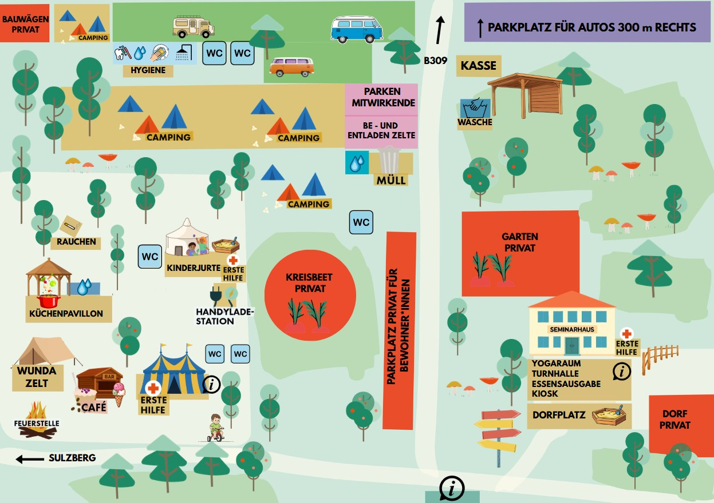

Für diese Auswahl gibt es keine Programmpunkte.
Wundaplunda – Programmheft & Tagesplaner
Sommererlebnis für Groß und Klein
Eine Veranstaltung des Fördervereins Gemeinschaft Sulzbrunn e. V.
Eine Veranstaltung des Fördervereins Gemeinschaft Sulzbrunn e. V.
Dein Tagesplaner für die Wundaplunda-Woche. Hier findest du alle Infos übersichtlich an einem Ort.
Telegram-Gruppe beitretenUnser Infoportal während dem FestivalLasst den Alltag hinter euch und verbringt mit uns eine unvergessliche Woche in der Natur. Wir laden Groß und Klein ein, gemeinsame Zeit zu genießen, kreativ zu sein, die Natur zu entdecken und echte Gemeinschaft zu erleben.
Wundaplunda ist unser Familien-Sommercamp im Ökodorf Sulzbrunn im Allgäu: sechs Tage Camping, Workshops, Musik und Zeit füreinander – für Familien, Paare und Singles jeder Konstellation. Veranstaltet wird die Woche vom Förderverein Gemeinschaft Sulzbrunn e. V.
Die Aufsichtspflicht liegt während des gesamten Aufenthalts bei den Eltern bzw. Erziehungsberechtigten – auch bei Workshops und Programmpunkten. Mehr dazu im Reiter „Familien & Kinder".
Unsere Workshopleitungen möchten allen Teilnehmenden genügend Zeit und Aufmerksamkeit schenken. Bitte kommt daher möglichst pünktlich und steigt nicht erst während des Workshops ein.
Ist die maximale Teilnehmendenzahl erreicht, können keine weiteren Personen mehr teilnehmen. Nutzt in der Zwischenzeit gerne unsere anderen Angebote wie die Waldrallye, den Spielewagen oder den Flying Fox. Vielen Dank für eure Rücksichtnahme – so schaffen wir gemeinsam eine entspannte Atmosphäre für alle!
Unser gemeinsames Abenteuer beginnt offiziell ab 11:00 Uhr. Die Anreisezeit ist zwischen 11–14 Uhr! Wir bitten euch von Herzen, nicht früher anzureisen – weder am Vortag noch deutlich vor der Einlasszeit.
Adresse fürs Navi: Gemeinschaft Sulzbrunn, Sulzbrunn 1–8, 87477 Sulzberg
Mittagessen gibt's von 11:45–13:15 Uhr. Um 14:00 Uhr laden wir zu unserer Eröffnung (Willkommenskreis) ein – da freuen wir uns, wenn so viele wie möglich dabei sind.
Solltet ihr später oder außerhalb der Anreisezeit 11–14 Uhr ankommen, schreibt uns bitte kurz an gaeste@seminarhaus-sulzbrunn.de, damit wir euch einplanen können.
Nutzt bitte zum Be- und Entladen die Fläche „Be- und Entladen Zelte" auf dem Plan (max. 15 Minuten). Danach fahrt euer Auto bitte zügig zum Parkplatz für Autos (rechts, ca. 300 m), damit andere auch ausladen können. Anschließend kommt bitte zur Kasse, wo ihr euer Wundaplunda-Bändchen bekommt.
Für Camper mit Bus oder Wohnmobil gibt es eine eigene Camping-Stellfläche – wir weisen euch direkt vor Ort ein. Auch hier gilt: erst parken, dann zur Kasse zur Anmeldung.
Nutzt bitte den Lieferanteneingang des Seminarhauses (nicht den Haupteingang!) zum kurzen Entladen. Danach bitte zur Kasse zur Anmeldung und zum Parken auf den Parkplatz für Autos.
Bahnhof Sulzberg (Ried): stündliche Verbindung von und nach Kempten; 2,3 km Fußweg zum Seminarhaus, ca. 30 Minuten.
Bushaltestelle Sulzbrunn Abzw. Römerhaus, Sulzberg: Linie 63, 3 bis 6 mal täglich von und nach Kempten; 1 km Fußweg zum Seminarhaus, ca. 15 Minuten.
Wir bieten keinen Shuttle an. Bitte sucht nach Mitfahrgelegenheiten in der Telegram-Gruppe.
Zum Vergrößern einfach auf den Plan tippen (eigener Bereich „Geländeplan"). Auf dem Plan sind alle Orte direkt beschriftet; rot markierte Flächen sind private Bereiche der Gemeinschaft – bitte nicht betreten.
Wenn du oder dein Kind euch am Anreisetag nicht wohlfühlt (Fieber, Durchfall, Erbrechen etc.) oder ihr kürzlich krank wart mit möglicher Ansteckungsgefahr, bleibt bitte zu Hause – ein Virus kann sich rasant im Camp ausbreiten. Solltet ihr während Wundaplunda mit Ansteckungsgefahr krank werden, legen wir euch zum Wohle aller anderen Gäste sehr ans Herz, nach Hause zu fahren.
Wundaplunda lebt vom gemeinsamen Erleben – das ist ein wichtiger Teil unseres Konzepts. Wir glauben an echte Begegnung, gegenseitige Unterstützung und Zeit füreinander, und genau das wollen wir in dieser Woche gemeinsam gestalten.
Wir übernehmen keine Kinderbetreuung, d. h. Eltern haften für ihre Kinder und haben die Aufsichtspflicht – das gilt für den gesamten Aufenthalt und auch für alle Workshops und Programmpunkte. Auch wenn ein Workshop ausschließlich für Kinder ausgeschrieben ist, bleibt die Begleitung durch eine erwachsene Bezugsperson erforderlich.
Seid achtsam und gebt die Verantwortung nicht unabgesprochen ab. Schließt euch mit anderen Familien zusammen, wechselt euch bei der Aufsicht ab und tauscht euch aus – die Clanzeit bietet dafür einen schönen Rahmen.
Am Dorfplatz gibt es einen Sandkasten – gerne Sandspielzeug mitbringen. Weitere Kreativ- und Kinderangebote findet ihr in der Kinderjurte.
Wie war dein Wundaplunda? Dein Feedback hilft uns sehr, das Camp jedes Jahr noch schöner zu machen. Wir freuen uns über jede Rückmeldung!
Zum Feedback-FormularÖffnet unser Feedback-Formular in einem neuen Tab.
Zum Vergrößern einfach auf den Plan tippen. Alle wichtigen Orte sind direkt auf dem Plan beschriftet.

Wir laden ein zum täglichen gemeinsamen Start in den Tag: Musik, Programmänderungen, Austausch.
Auf dem Wundaplunda gibt es sechs verschiedene Tierclans. Die Clans sollen euch das Ankommen erleichtern und den Austausch untereinander fördern. Oft entstehen daraus ganz von selbst kleine Unterstützungsnetzwerke – sei es beim Workshopbesuch, beim Kochen oder einfach im Campalltag. In der Clanzeit trefft ihr euch mit eurem Clan.
Am Anreisetag starten wir gemeinsam um 14 Uhr in diesem Kreis, um das erste Mal in der Gruppe zusammenzukommen. Wir freuen uns, wenn so viele von euch wie möglich dabei sind.
Bitte schaut auf unser digitales Programmheft. Zusätzlich verkünden wir Änderungen beim Morgenkreis, kommunizieren in unserem Telegram-Kanal und hängen die aktuellste Tagesversion an unseren Info-Points aus.
Die Duschen befinden sich im autarken Solarduschwagen (bitte nur ökologische Seife & Shampoo verwenden – diese wird auch bereitgestellt). Wer sich wohler fühlt, kann auch im Seminarhaus (2. UG) duschen.
Toiletten, Pipiplätze & Desinfektion siehe Reiter „Infrastruktur".
In der Toilette im Erdgeschoss des Seminarhauses befindet sich ein Wickeltisch.
Stoffwindeln oder Kleidung können im UG des Seminarhauses in einer Waschmaschine gegen Spende gewaschen werden. Bitte sprecht dafür jemanden aus dem Team an. Fürs schnelle Ausspülen von Flecken o. Ä. gibt es einen Waschplatz bei der Hackschnitzelhalle (Kassenbereich).
Erste-Hilfe-Sets befinden sich im Zirkuszelt, der Kinderjurte und im Seminarhaus. Unsere Ersthelferin Fabienne aus dem Orgateam ist erreichbar unter 0176 43218897 – die Nummer findet ihr auch am Infoboard im Zirkuszelt. (Krankenhaus & Notrufnummern siehe „Sicherheit & Notfälle".)
Wenn du oder dein Kind sich am Anreisetag nicht wohlfühlt (Fieber, Durchfall, Erbrechen etc.) oder kürzlich krank wart mit möglicher Ansteckungsgefahr, bleibt bitte zu Hause. Ein Virus verbreitet sich im Camp schnell. Solltet ihr während Wundaplunda mit Ansteckungsgefahr krank werden, legen wir euch zum Wohle aller anderen Gäste sehr ans Herz, nach Hause zu fahren. (Mehr im Reiter „Anreise & Orientierung".)
Auf dem Gelände stehen 8 Komposttoiletten bereit, die regelmäßig gereinigt werden. Zusätzlich gibt es eine barrierefreie Toilette mit Waschbecken im Seminarhaus (EG). Bitte erklärt euren Kindern das Komposttoilettensystem und wie wichtig es ist, sich nach jedem Toilettengang die Hände zu waschen!
Pipiplätze: Für das kleine Geschäft gibt es eigene Pipiecken, um die Komposttoiletten zu entlasten.
Desinfektion: Oberflächendesinfektion, Handdesinfektion und Wasser mit Seife stehen an jeder Toilette bereit.
Bitte kommt so autark wie möglich. Es gibt eine kleine Solarstation mit USB-Anschlüssen auf dem Gelände sowie Strom für einige Camper – leider aber nicht ausreichend für alle Camperbusse.
Im Küchenpavillon stehen Gemeinschaftskühlschränke für die Selbstverpflegung bereit – bitte beschriftet eure Lebensmittel. Eigene Kühlakkus können dort im Gefrierfach wieder aufgeladen werden. (Mehr zur Selbstverpflegung im Reiter „Versorgung & Verpflegung".)
Vieles auf dem Wundaplunda funktioniert nur, wenn wir aufeinander achten: pünktlich zu Workshops und Essenszeiten kommen, gemeinsam genutzte Orte sauber hinterlassen und Rücksicht auf eure Nachbarn nehmen. Danke, dass ihr so achtsam miteinander umgeht!
Bitte respektiert die im Plan markierten Privatbereiche der Gemeinschaft. Ihr seid herzlich eingeladen, das Gelände zu entdecken und an der Geländeführung teilzunehmen – aber bitte nicht in Bereiche gehen, die klar als „privat" gekennzeichnet sind.
Die Gemeinschaft Sulzbrunn hat verschiedene Tiere am Platz: Hasen, Schafe, Rinder, Laufenten, Hühner, Bienen. In den letzten Jahren war das Hasengehege für euch und eure Kinder zugänglich. Auch dieses Jahr möchten wir den Umgang mit den Hasen ermöglichen. Bitte begleitet eure Kinder und bleibt beim Tierbesuch dabei.
Wir haben einen ausgewiesenen Raucherbereich auf dem Gelände eingerichtet. Bitte nutzt ausschließlich diesen Bereich zum Rauchen. Aus Rücksicht auf die vielen Kinder und eure Mitmenschen sowie aufgrund der Waldbrandgefahr ist das Rauchen auf dem restlichen Festgelände nicht gestattet.
Wir verkaufen bewusst keinen Alkohol auf dem Wundaplunda – wir finden, es braucht keinen Alkohol, um eine wundervolle Woche miteinander zu verbringen.
Du bist zu Gast in der Gemeinschaft Sulzbrunn. Bitte bleibt auf den Wundaplunda-Flächen, vermeidet Plastik, nutzt ökologische Seife in der Natur, geht achtsam mit Feuer um und produziert so wenig Müll wie möglich.
Unser Ansatz ist, das Wundaplunda so ökologisch wie möglich zu gestalten. Bitte macht euch vorher Gedanken über Plastikverpackungen und packt Lebensmittel möglichst in Tupperdosen, Gläser oder andere Behälter, damit wir den Müll über die Woche reduzieren.
Wir stellen einen Komposteimer im Küchenzelt für Essensreste zur Verfügung – der Kompost landet bei uns im Garten, bitte daher kein Fleisch oder Fisch reinwerfen (das gehört in den Restmüll, ebenfalls im Küchenzelt). Papier und Plastik bitte an unserer Müllstation entsorgen.
Wir haben eine separate Spülstation und ein Spülbecken in der Draußenküche. Nutzt zum Spülen vorwiegend die Spülstation, da dort mehr Platz ist. Bitte hinterlasst sie sauber für die Nächsten – Essensreste zuvor in die Tonne. Denkt an ökologisches Spülmittel!
Wer noch offene Rechnungen hat: bitte schnell überweisen. Bringt eure Buchungsbestätigung mit – ihr bekommt vor Ort euer Wundaplunda-Ticket, je nach Buchung.
Bitte bringt genügend Bargeld für die Woche mit. Die Bezahlung von Getränken, Verpflegung, Kiosk und Markt ist ausschließlich in bar möglich. Einzige Ausnahme: An der Essensausgabe ist zusätzlich PayPal per QR-Code möglich (siehe Reiter „Versorgung & Verpflegung"). Bitte stellt sicher, dass ihr einen QR-Code-Scanner auf dem Handy habt, wenn ihr über PayPal bezahlen möchtet. Der nächste Geldautomat (Sparkasse) ist in Sulzberg.
Verloren oder gefunden? Bitte alles zur Bar bringen oder dort nachsehen. Du kannst auch schnell in unserer Telegram-Gruppe posten, wenn du etwas vermisst oder gefunden hast.
Fragen zur Anreise, Buchung oder Frühstück? gaeste@seminarhaus-sulzbrunn.de
Fragen zum Programm? carmen@wundaplunda.de (Carmen)
Schnelles Infoportal zu Programmänderungen, Lost & Found etc.: Komm in unsere Telegramgruppe!
Zur Telegram-GruppeBitte individuell anpassen:
Erste-Hilfe-Sets befinden sich im Zirkuszelt, der Kinderjurte und im Seminarhaus. Ersthelferin Fabienne aus dem Orgateam: 0176 43218897 (auch am Infoboard im Zirkuszelt).
Unsere Ersthelfer sind für die Erstversorgung kleinerer Verletzungen und akuter Notfälle da. Sie ersetzen jedoch keine medizinische Behandlung. Bei allen schwerwiegenden Verletzungen, Erkrankungen oder Notfällen wird umgehend der Rettungsdienst (112) verständigt. Im Zweifel gilt: lieber einmal mehr den Rettungsdienst alarmieren als einmal zu wenig.
Bei Sturm oder Gewitter informieren wir rechtzeitig. In diesem Fall findet ihr Unterschlupf in der Turnhalle im Seminarhaus.
Feuer bitte nur an den dafür vorgesehenen Stellen machen – diese könnt ihr selbst betreuen, z. B. für Stockbrot oder Lagerfeuer. Bei akuter Waldbrandgefahr informieren wir rechtzeitig.
Wundaplunda ist eine Veranstaltung des Fördervereins der Gemeinschaft Sulzbrunn e. V. Der Förderverein ist Bildungsträger und Unterstützer lebendiger, inspirierender und nachhaltiger Veranstaltungen und Projekte in Sulzbrunn – überwiegend in den Bereichen Ökologie, Kunst & Kultur sowie Bildung.
Möchtest du mehr Veranstaltungen wie diese ermöglichen oder Sulzbrunn unterstützen? Dann freuen wir uns über eine Spende:
Förderverein Gemeinschaft Sulzbrunn e. V.
IBAN: DE33 7336 9264 0007 1227 56
BIC: GENODEF1DTA
Folgt uns auf Instagram und verlinkt uns gern – so erreichen wir noch mehr Familien!
Instagram: @wundaplundaDu möchtest 2027 einen Workshop, eine Show oder etwas Anderes beisteuern? Dann melde dich bei uns: carmen@wundaplunda.de
Wir brauchen immer helfende Hände vor Ort – auch nächstes Jahr. Schreib uns: carmen@wundaplunda.de
Das Seminarhaus bereitet alle Speisen mit frisch gekochten, biologischen Lebensmitteln zu – alles vegetarisch/vegan. Ihr versorgt euch flexibel und ohne Voranmeldung an der Essensausgabe.
Mittags: 11:45–13:15 Uhr · Abends: 17:45–19:15 Uhr
Es gibt immer ein wechselndes Tagesgericht, dazu hausgemachte Pizza, Pommes und frische Salate.
Wichtig: Aus Rücksicht auf Küche, Service und Spülschichten – bitte nicht erst kurz vor Ende der Essenszeiten kommen.
Täglich 07:45–09:00 Uhr. Spontan nicht möglich! Nur nach vorheriger Buchung für die ganze Woche. Nachbuchen nur bis 24. Juli möglich: gaeste@seminarhaus-sulzbrunn.de
Bio-Buffet mit Kaffee, Tee, Brot, Aufstrichen, Bananen und Äpfeln. Das Frühstücksbuffet ist nicht dafür gedacht, dass Speisen für die Brotzeit eingepackt werden – es ist kein Lunchpaket pro Person inkludiert! Bitte nehmt nur so viel, wie ihr auch essen könnt, und unterstützt die Küche.
Für alle, die sich selbst versorgen, gibt es einen überdachten Küchenpavillon mit Gaskochern, Kühlschränken und Waschbecken. Einige Töpfe und Pfannen sowie ein Muurikka-Grill sind vorhanden – bringt gerne für euren Bedarf mit. Eigene Kühlakkus können im Gefrierfach im Küchenpavillon wieder aufgeladen werden.
Wichtig: Beschriftet bitte alle Lebensmittel im Gemeinschaftskühlschrank.
Calzone: Auf unserer großen Muurikka-Pfanne könnt ihr niederschwellig Calzone zaubern. Calzone- & Stockbrotteig gibt's an unserer Bar.
Dienstags & Donnerstags · 1–2 Stunden geöffnet. Hier könnt ihr eure Vorräte an Bio-Grundnahrungsmitteln aufstocken: Nudeln, Saucen, Käse, Müsli, Aufstriche, frisches Gemüse, Obst, Eier & Co.
Die Bar befindet sich neben dem Zirkuszelt und bietet Waffeln, Stockbrotteig, Eis, Kaffee und alkoholfreie Getränke. Sie öffnet täglich zu bestimmten Zeiten sowie zusätzlich an Konzertabenden (siehe Programm). Das Kiosk im Seminarhaus hat nach dem Mittagessen geöffnet.
Wir verkaufen bewusst nur Alkoholfreies, als Teil unseres Konzepts – wir finden, es braucht keinen Alkohol, um eine wundervolle Woche miteinander zu verbringen.
Bringt eure eigene Tasse für Kaffee/Tee mit zur Bar. Falls ihr eure Tasse vergesst, nehmt euch gerne eine Leihtasse aus dem Küchenpavillon.
Bitte bringt genügend Bargeld für die Woche mit – an der Bar und am Kiosk ist nur Barzahlung möglich. Einzige Ausnahme: An der Essensausgabe ist zusätzlich auch PayPal ausschließlich per QR-Code möglich. Bitte stellt sicher, dass ihr einen QR-Code-Scanner auf dem Handy habt, wenn ihr über PayPal bezahlen möchtet.